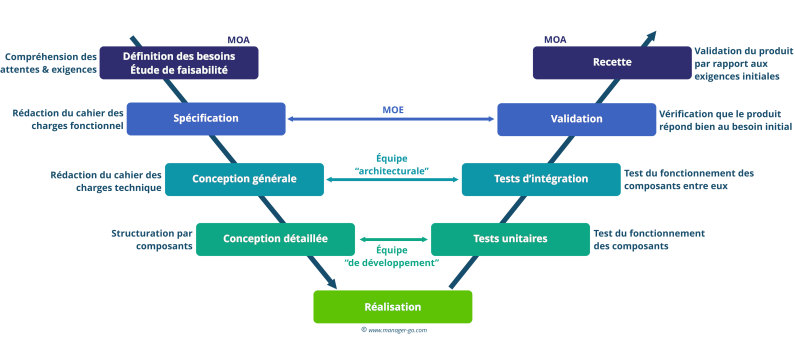
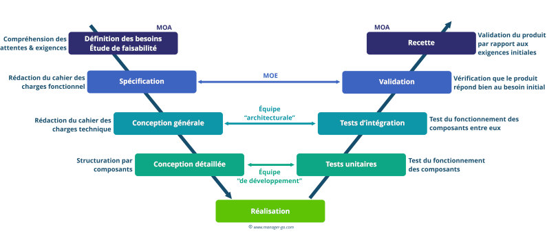

Cycle en V
Le cycle en V est un modèle de gestion de projet utilisé dans le développement de systèmes, qui se caractérise par une phase de spécification, une phase de réalisation et une phase de validation.

Le cycle en V est un modèle de gestion de projet utilisé dans le développement de systèmes, qui se caractérise par une phase de spécification, une phase de réalisation et une phase de validation.
